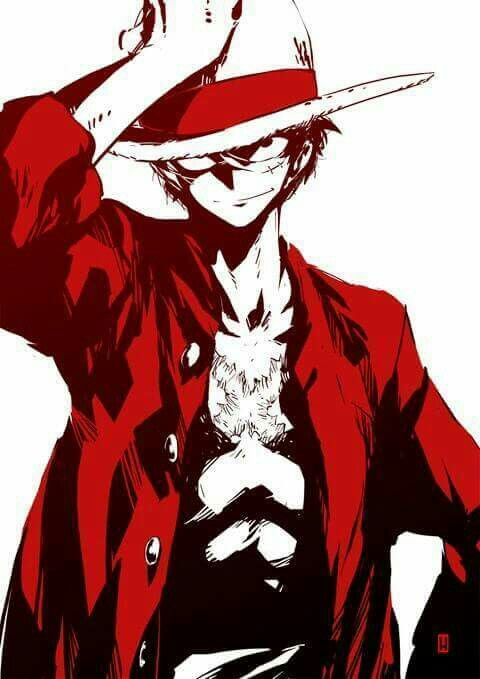

BĂNG HẢI TẶC MŨ RƠM.

Thuyền trưởng: Monkey D.Luffy.
Monkey D. Luffy "Mũ Rơm " là một nhân vật chính trong manga One Piece đình đám của tác giả Eiichiro Oda.Luffy là người sáng lập và là thuyền trưởng của băng Hải tặc Mũ Rơm, Ước mơ của cậu là trở thành Vua Hải Tặc